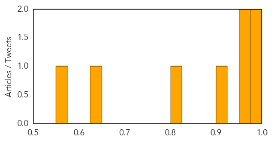

Influenza
30-Day Web Trend
30-Day Twitter Trend
1 alerts, 0 warnings

Article Locations

Article Confidences
Top Articles:
- 0.995
- Influenza-like illness plagues Brockport campus
- 0.985
- 2 people die from influenza in Delaware
- 0.971
- Pregnant mother dies from flu, child saved
- 0.967
- Hong Kong learns of two new human cases of avian flu in China
- 0.916
- Holland America cruise ship sets sail after CDC probes for norovirus outbreak
- 0.809
- MMR vaccine linked to lower rate of infection-related hospital admissions
- 0.626
- Fox 28: South Bend, Elkhart IN News, Weather, Sports
- 0.555
- Study finds low rate of adverse events related to vaccinations in Ontario
Top Tweets:
-
No tweets found for Feb 25, 2014
MERS
30-Day Web Trend
2 alerts, 7 warnings

30-Day Twitter Trend
0 alerts, 0 warnings

Article Locations

Article Confidences

Top Articles:
- 1.000
- Saudi Arabia reports two new cases of MERS-CoV
- 0.997
- Deadly Mers virus has been infecting camels for years, Columbia University study shows
- 0.997
- Saudi Arabian Camels Carry MERS Virus
- 0.995
- Saudi camel virus found in humans, killer bug detected in secretions and blood
- 0.995
- Study: MERS-CoV may have been in Saudi camels 22 years ago
- 0.993
- Camel likely source of killer respiratory virus in people: study - Health, Science and Environment
- 0.993
- Camels Likely Source of MERS Virus in People — Naharnet
- 0.992
- Camels likely source of MERS virus in people: study
- 0.988
- Saudi camels infected with MERS or MERS-like virus as early as 1992: study
- 0.980
- MERS Virus That Threatens Humans Also Found in Camels
- 0.944
- MERS coronavirus in 74% of Saudi Arabian camels – The Chart
- 0.844
- DHA and France to collaborate in combating infectious diseases
Top Tweets:
-
No tweets found for Feb 25, 2014